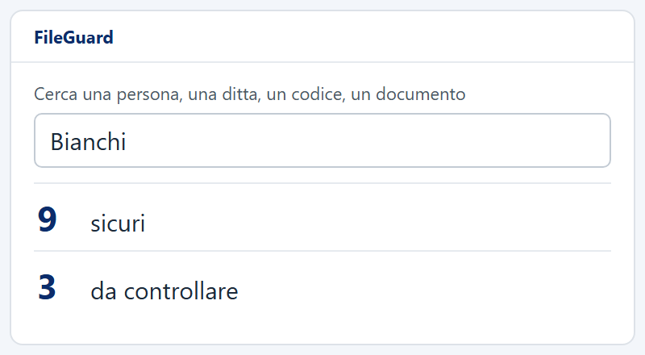
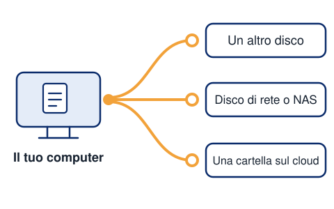

Ogni giorno in ufficio succede qualcosa ai documenti. FileGuard lo sa.
Ecco le frasi che senti più spesso, e cosa fa FileGuard per ognuna.
09:05
Ma chi ha spostato la cartella del cliente?
Segue i tuoi documenti
Ogni documento delle cartelle che scegli ha il suo diario: cosa gli è successo, quando e da quale computer. Niente più giri di domande in ufficio.
- creato, modificato, rinominato, spostato, eliminato
- giorno e ora
- nome del computer
- ricerca nel diario
- esportazione in Excel

10:40
Ho salvato sopra la versione buona!
Ti riporta indietro
Apri le versioni del documento, ne confronti due e rimetti quella giusta. Il pomeriggio è salvo.
- «Vedi le versioni»
- confronto tra due versioni
- «Ripristina versione»

11:30
Un cliente vuole sapere cosa teniamo su di lui.
Trova chi c'è nei documenti
Scrivi un nome, una ditta o un codice fiscale: FileGuard ti mostra i documenti che lo riguardano. Per ogni persona riconosciuta c'è una scheda.
- le persone sono riconosciute dal codice fiscale scritto nei documenti
- risultati divisi in «sicuri» e «da controllare»
- ricerca per periodo presto
- tutto resta sul tuo computer

12:15
Perché questo documento nella ricerca non esce?
Ti dice cosa non riesce a leggere
Alcuni documenti la ricerca non li legge: protetti da password, rovinati, troppo grandi o di un tipo non ancora leggibile. FileGuard te li mette in un elenco, così sai cosa controllare a mano.
- «Documenti non letti»
- esportazione in Excel
Documenti non letti 4
- Contratto firmato.pdfprotetto da password
- Scansione 0412.tiftroppo grande
- Verbale vecchio.docrovinato
- Planimetria.dwgtipo non ancora leggibile
14:00
Mi avvisi se qualcuno tocca quella cartella?
Ti avvisa quando conta
Nelle cartelle protette, se un documento viene modificato o sparisce dalla cartella, arriva l'avviso. Sul computer, e se vuoi anche via email alle persone che scegli tu.
Non blocca nessuno.Il lavoro continua, la decisione resta tua.
- avvisi nel programma, per esempio «Cancellato un file o una cartella protetta» e «Modificato un file protetto»
- avvisi via email divisi per tipo, senza nomi di file

15:10
Quella cartella non si tocca.
Mette le regole, cartella per cartella
Decidi tu cosa vale per ogni cartella. FileGuard veglia e ti avvisa.
- Non si cancella
- Se un documento viene eliminato, lo sai.
- Non si modifica
- Se un documento viene cambiato, lo sai.
- Deve esserci
- Se manca un documento che deve stare lì, lo vedi.
- Non esce di qui presto
- Se un documento lascia la cartella, arriva l'avviso.
- Non si tiene per sempre presto
- Vedi da quanto tempo i documenti sono nella cartella.

16:20
Cosa ci manca ancora?
Ti ricorda cosa fare
Nella sezione Conformità trovi «Da fare» e le tue «Cartelle protette»: un posto unico per vedere cosa resta da sistemare.
[DA CONFERMARE CON DEV: cosa compare esattamente in «Da fare»]
17:45
Il computer si è rotto. E adesso?
Tiene le copie dove vuoi tu
Le copie dei documenti vanno dove scegli tu: un altro disco, una chiavetta, un disco di rete o un NAS, oppure una cartella sincronizzata con il tuo servizio cloud. Se vuoi, anche in due posti.
- «Prova la connessione» per i dischi di rete
- scegli quanti giorni e quante versioni tenere
- la pulizia periodica lascia una copia al giorno, poi una a settimana
- una copia ogni tanti minuti, di cui resta l'ultima
- si può scegliere di non tenere copie

18:30
Lo usano anche gli altri due computer?
Lavora su tutto l'ufficio
Più computer con la stessa licenza, gestiti dalle Impostazioni. E parla la tua lingua: italiano, inglese, tedesco, francese, spagnolo, portoghese, cinese, arabo.
- 8 lingue
- controlla da solo gli aggiornamenti e ti avvisa quando c'è una versione nuova
- manuale e guida dentro il programma
- Windows 10 (dalla versione 1809, ottobre 2018) e Windows 11
Domani
Marca temporale presto
Fissa la data e l'ora in cui un documento era così com'è, per mostrarlo se qualcuno te lo chiede.
Provalo sui tuoi documenti.
Lo installi con una procedura guidata, scegli le cartelle e da quel momento FileGuard sa cosa succede.